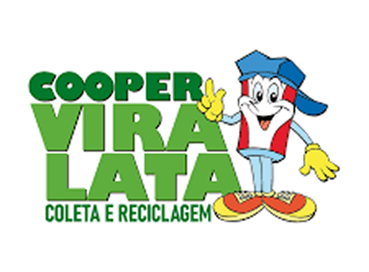
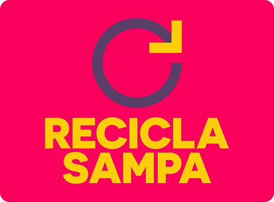
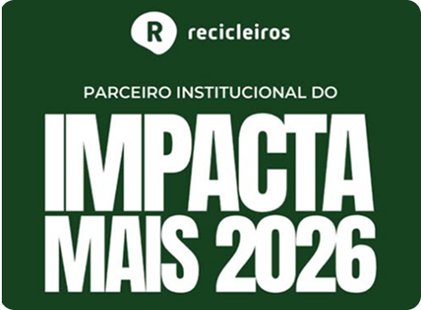
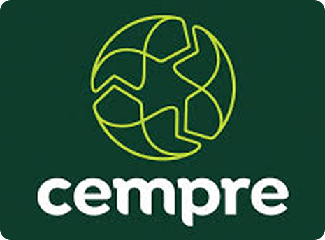
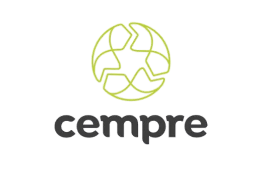
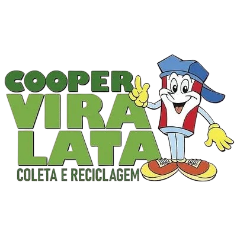
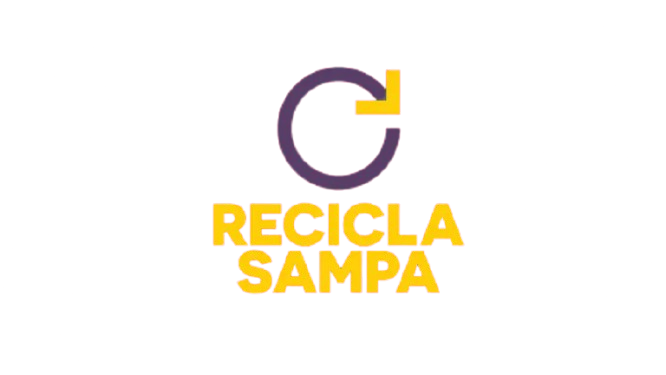
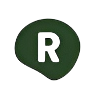

Quem já faz a diferença
Pequenas atitudes geram grandes transformações. Conheça pessoas e iniciativas que contribuem diariamente para um futuro mais sustentável através da reciclagem e da conscientização ambiental.
Pequenas atitudes geram grandes transformações. Conheça pessoas e iniciativas que contribuem diariamente para um futuro mais sustentável através da reciclagem e da conscientização ambiental.

Há mais de 23 anos atua na cidade de São Paulo com educação ambiental, coleta seletiva, triagem e comercialização dos materiais recicláveis, destinação final dos resíduos e muita história para contar.
Acessar ONG
O Movimento Recicla Sampa busca, por meio de uma plataforma de comunicação digital, informar, conscientizar e engajar a população, ampliando o volume da coleta de lixo reciclável na cidade.
Acessar ONG
O movimento Somos Recicleiros é uma organização da sociedade civil, que atua capacitando as prefeituras para que elas elaborem e implementem suas políticas públicas para a coleta seletiva e reciclagem.
Acessar ONG
Compromisso Empresarial para Reciclagem (CEMPRE), é uma associação dedicada a promover a sustentabilidade empresarial por meio de ações de reciclagem com impacto social e apoio à economia circular no Brasil.
Acessar ONG


